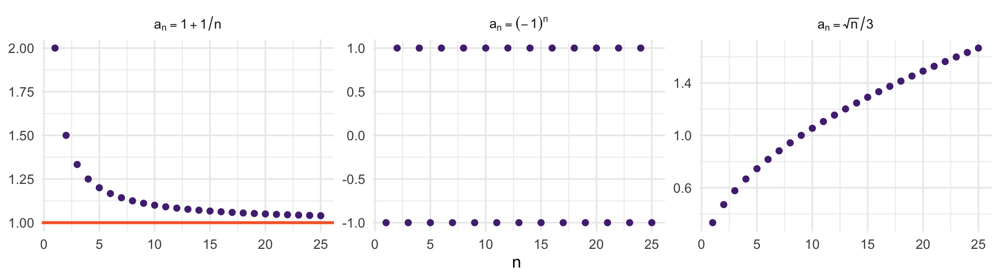
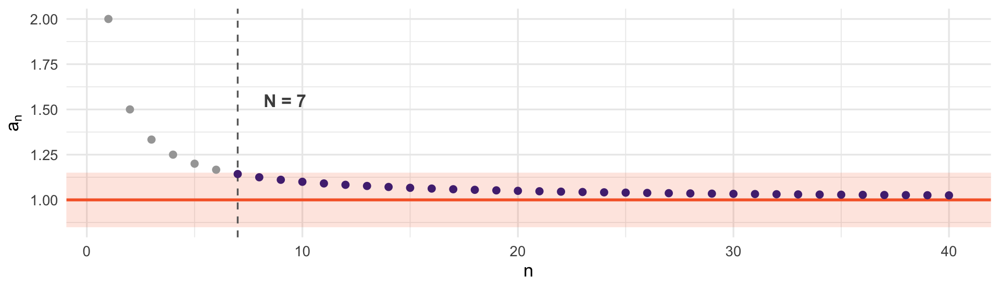
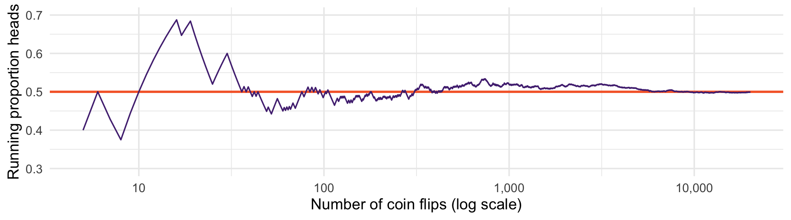
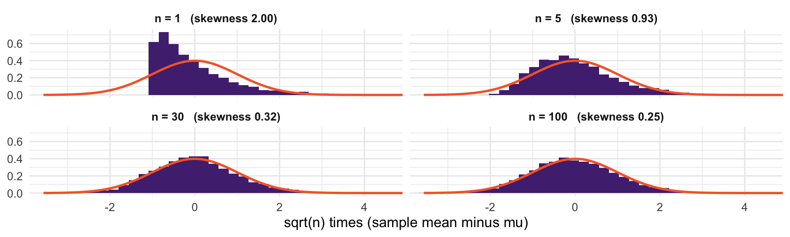

The law of large numbers and the central limit theorem
We know the sampling distribution is centered on the truth with spread \(\sigma/\sqrt{n}\)
What we do not know is its shape, and without the shape we cannot compute probabilities
Today we learn about asymptotics, the law of large numbers and the central limit theorem.
A sequence is just an ordered, endless list of numbers, indexed by \(n = 1, 2, 3, \ldots\)
Written \(\{a_n\}\), where \(a_n\) is the \(n\)th entry
The index is always a whole number, and the list never stops
\(a_n = 1/n\) gives \(1, \tfrac{1}{2}, \tfrac{1}{3}, \tfrac{1}{4}, \ldots\)
We care because \(n\) will be our sample size, and \(a_n\) will be something computed from a sample of that size. “What happens as \(n\) grows” can be thought about as a sequence.

Left: creeps toward 1 and stays there. It converges.
Middle: bounces between \(-1\) and \(1\) forever. No limit.
Right: grows without bound. Also no limit.
Definition
\(a_n \to a\) if for every \(\epsilon > 0\) there is an \(N\) such that
\[|a_n - a| < \epsilon \quad \text{for all } n > N\]
In words: name any bound, however tight. Eventually the sequence gets within that distance of \(a\) and never leaves again.

Pick \(\epsilon = 0.15\) (the shaded band). From \(N = 7\) onward, every point is inside it — and would stay inside for any larger \(n\).
Pick a smaller \(\epsilon\) and you simply need a larger \(N\). That it always exists is what convergence means.
Estimators are random. \(\bar{X}_n\) is not a fixed number for each \(n\) -it is a different value every time you draw a sample.
So \(\{\bar{X}_n\}\) is a sequence of random variables, not of numbers
We cannot ask whether it eventually stays within \(\epsilon\) - an unlucky sample could always land outside
What we can ask is whether the probability of landing outside gets small.
Definition
A sequence of random variables \(\{Z_n\}\) converges in probability to \(b\) if for every \(\epsilon > 0\),
\[P\big(|Z_n - b| > \epsilon\big) \longrightarrow 0 \quad \text{as } n \to \infty\]
Written \(Z_n \overset{p}{\to} b\), or \(\text{plim}\, Z_n = b\).
The probability of landing outside any interval around \(b\) - however small - goes to zero.
An estimator \(\widehat{\theta}_n\) is consistent for \(\theta\) if \(\widehat{\theta}_n \overset{p}{\to} \theta\): its sampling distribution collapses onto \(\theta\). To prove it we need a way to bound \(P(|\widehat{\theta}_n - \theta| > \epsilon)\), and one inequality does it.
Chebyshev’s Inequality
If \(X\) has mean \(\mu\) and finite variance, then for any \(\delta > 0\),
\[P\big(|X - \mu| \geq \delta\big) \leq \frac{\text{Var}(X)}{\delta^{2}}\]
Split the variance integral into the region near \(\mu\) and the region at least \(\delta\) away:
\[ \begin{aligned} \text{Var}(X) &= \int (x - \mu)^2 f(x)\,dx \\ &\geq \int_{|x - \mu| \geq \delta} (x - \mu)^2 f(x)\,dx && \text{drop the region near } \mu \\ &\geq \delta^2 \int_{|x - \mu| \geq \delta} f(x)\,dx \;=\; \delta^2\, P\big(|X - \mu| \geq \delta\big) && \text{out there, } (x - \mu)^2 \geq \delta^2 \end{aligned} \]
Divide both sides by \(\delta^2\). \(\;\blacksquare\)
No distributional assumption anywhere. Variance alone limits how far a variable strays from its mean.
Weak Law of Large Numbers
Let \(X_1, \ldots, X_n\) be iid with \(E[X_i] = \mu\) and \(\text{Var}(X_i) = \sigma^{2} < \infty\). Then \(\bar{X}_n \overset{p}{\to} \mu\).
Proof. We already know \(E[\bar{X}_n] = \mu\) and \(\text{Var}(\bar{X}_n) = \sigma^{2}/n\). Apply Chebyshev to \(\bar{X}_n\), for any fixed \(\epsilon > 0\):
\[P\big(|\bar{X}_n - \mu| \geq \epsilon\big) \;\leq\; \frac{\text{Var}(\bar{X}_n)}{\epsilon^{2}} \;=\; \frac{\sigma^{2}}{n\,\epsilon^{2}}\]
With \(\epsilon\) fixed and \(\sigma^{2} < \infty\), the bound \(\to 0\) as \(n \to \infty\). \(\;\blacksquare\)
Finite variance — without it the Chebyshev bound is infinite and this proof fails. (The LLN still holds if the mean is finite, but the proof is harder.)
Independence — needed for \(\text{Var}(\bar{X}_n) = \sigma^{2}/n\). Recall variances add only under independence.
Identically distributed — needed for a single \(\mu\) to be the target
Break independence and \(\text{Var}(\bar{X}_n)\) shrinks more slowly than \(\sigma^2/n\) — sometimes not at all. That’s why we have different approaches for clustered data.
Chebyshev gives more than the LLN. Apply it to any estimator:
\[P\big(|\widehat{\theta}_n - \theta| \geq \epsilon\big) \;\leq\; \frac{E\big[(\widehat{\theta}_n - \theta)^{2}\big]}{\epsilon^{2}} \;=\; \frac{MSE(\widehat{\theta}_n)}{\epsilon^{2}}\]
Sufficient condition for consistency
If \(MSE(\widehat{\theta}_n) \to 0\) then \(\widehat{\theta}_n \overset{p}{\to} \theta\).
And since \(MSE = \text{Bias}^{2} + \text{Var}\), both pieces must vanish. That is the math behind the three cases from the estimators session: the sample SD’s bias and variance both vanish; the confounded slope’s bias stays near 0.70; the first observation’s variance stays at \(\sigma^2\).

The theorem says this must happen. At 20,000 flips: 0.499.
Nothing about any particular sample — it is a statement about a limit
It does not make tails “due” after a run of heads. Deviations are not corrected, they are diluted by a growing denominator.
And it gives no information about the shape of \(\bar{X}_n\) at finite \(n\)
Chebyshev bounds the tail, but crudely. For actual probabilities we need the distribution.
Definition
\(\{Z_n\}\) converges in distribution to \(Z\) if their CDFs converge pointwise:
\[F_{Z_n}(z) \longrightarrow F_Z(z)\]
at every \(z\) where \(F_Z\) is continuous. Written \(Z_n \overset{d}{\to} Z\).
Convergence in probability: the estimator collapses onto a number
Convergence in distribution: its shape settles down, once rescaled
Central Limit Theorem
Let \(X_1, \ldots, X_n\) be iid with \(E[X_i] = \mu\) and \(\text{Var}(X_i) = \sigma^{2} < \infty\). Then
\[\sqrt{n}\,\big(\bar{X}_n - \mu\big) \overset{d}{\to} N(0, \sigma^{2})\]
Equivalently \(\;\dfrac{\sqrt{n}\,(\bar{X}_n - \mu)}{\sigma} \overset{d}{\to} N(0,1)\), giving the approximation
\[\bar{X}_n \overset{a}{\sim} N\!\left(\mu, \frac{\sigma^{2}}{n}\right)\]
The raw deviation collapses: \(\text{Var}(\bar{X}_n - \mu) = \sigma^{2}/n \longrightarrow 0\).
So multiply by some constant \(c\) and ask what \(c\) keeps the spread fixed. Using the variance rules from earlier, \(\text{Var}(cZ) = c^{2}\text{Var}(Z)\):
\[\text{Var}\big(c(\bar{X}_n - \mu)\big) = c^{2}\,\frac{\sigma^{2}}{n}\]
For that to stay constant, \(c^{2}\) must grow like \(n\), so \(c = \sqrt{n}\):
\[\text{Var}\big(\sqrt{n}(\bar{X}_n - \mu)\big) = n \cdot \frac{\sigma^{2}}{n} = \sigma^{2}\]
Fixed, and non-shrinking. \(\sqrt{n}\) is the unique rate that works.
Too small a factor and the distribution still collapses; too large and it explodes
The CLT is not the claim that \(\bar{X}_n\) becomes normal — it converges to a constant. It is a claim about this rescaled deviation.
The full proof needs tools beyond this course — Blitzstein and Hwang do it in Chapter 10 with transforms. But two facts explain it.
Averaging erases shape. The skewness of a standardized sample mean is the population’s skewness divided by \(\sqrt{n}\), and other features of the shape fade even faster. Only the mean and variance survive.
The normal is the shape averaging leaves alone. Average independent normals and you get a normal again. No other finite-variance shape survives averaging unchanged, so that is where repeated averaging settles.
This is why the CLT applies to skewed, bimodal, and discrete populations alike. The population’s peculiarities do not survive the averaging.

An exponential population (skewness 2), rescaled by \(\sqrt{n}\). Orange is \(N(0,1)\).
The CLT standardizes with \(\sigma\), which we never know. What we actually compute is \(\dfrac{\bar{X}_n - \mu}{s / \sqrt{n}}\).
\(s\) is consistent. Rearranging the identity from the \(n-1\) proof in the estimators session:
\[s^2 = \frac{n}{n-1}\Big[\underset{\overset{p}{\to}\; \sigma^2}{\tfrac{1}{n}\textstyle\sum_i (X_i - \mu)^2} \;-\; \underset{\overset{p}{\to}\; 0}{(\bar{X}_n - \mu)^2}\Big] \;\overset{p}{\to}\; \sigma^2\]
Both pieces follow from the LLN: the first is an average of \((X_i - \mu)^2\), whose mean is \(\sigma^2\); the second shrinks because \(\bar{X}_n \overset{p}{\to} \mu\).
So in large samples, dividing by \(s\) or by \(\sigma\) gives the same answer:
\[\frac{\bar{X}_n - \mu}{s/\sqrt{n}} \;\overset{d}{\to}\; N(0,1)\]
The formal result is called Slutsky’s theorem. In small samples the substitution does matter: that is the \(t\) distribution (later).
The CLT is a limit theorem. On its own it says nothing about the error at any finite \(n\).
There are results that quantify it, and they say the approximation error shrinks roughly in proportion to \(1/\sqrt{n}\)
The constant in front depends on how skewed the population is
So skewness governs the rate. A symmetric population converges quickly; a badly skewed one can need thousands of observations. “\(n = 30\)” is a folk rule.
LLN: the estimator lands on the truth
CLT: we know the shape of how it gets there, so probabilities are computable
Replacing \(\sigma\) with \(s\) costs nothing in large samples
\[\frac{\bar{X}_n - \mu}{s/\sqrt{n}} \;\overset{d}{\to}\; N(0,1)\]
Every \(p\)-value, confidence interval, and \(t\)-statistic in the rest of this course is that one line.
The fine print. Both theorems need independent draws: clustered, serially correlated, and network data break them, and the naive standard error is then too small.
The CLT also needs finite variance, which some wealth and city-size distributions lack.
And these theorems repair non-normality, not bad design.